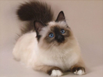

Бенгальській породі котів вдалось поєднувати в собі ніжність домашніх вихованців і грайливість і сміливість і мисливські темпераменти диких звірів. Найулюбленіша їхня гра- це гонитва за м'ячеком, іграшками або комахами, які залетіли до квартири. До таких тварин потрібно ставитися з особливою любов'ю, інакше вони можуть вирости дуже дикими. Однак якщо кіт Бенгальської породи полюбить вас, він буде відданим до кінця життя.
| Країна і рік походження | США, 1961 рік |
| Тип хутра | Короткошерста |
| Розмір | Середній |
| Середня тривалість життя | США, 1961 рік |